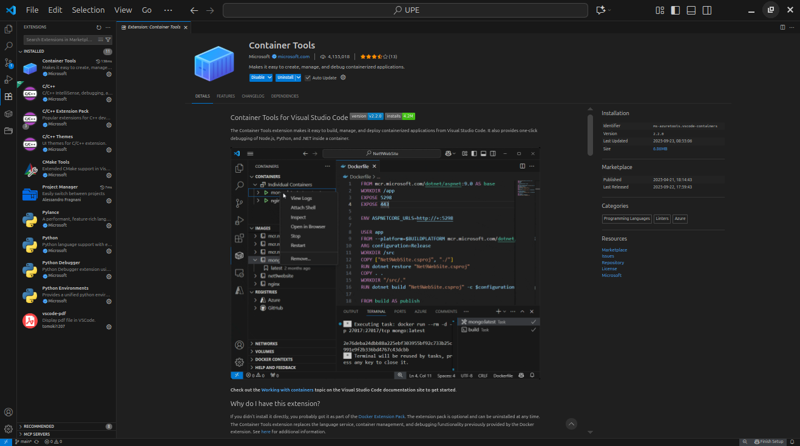
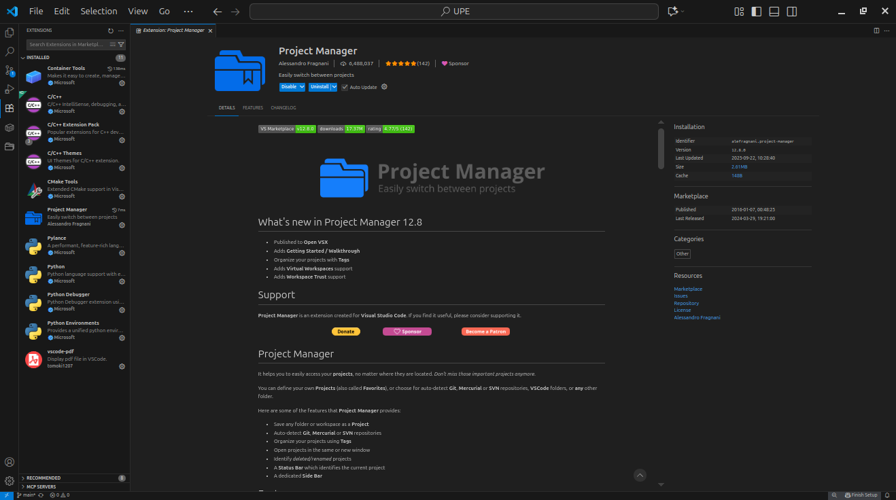
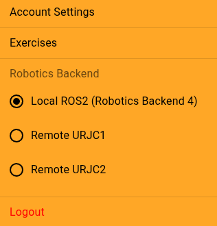
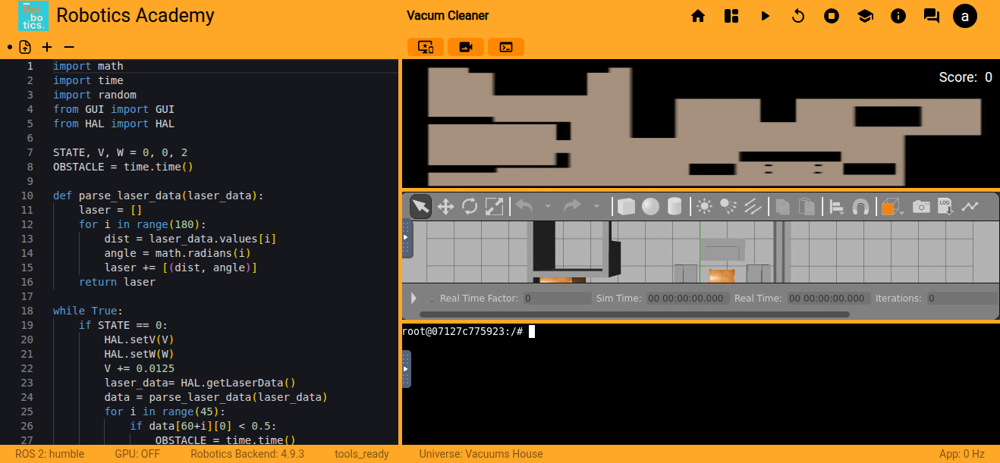
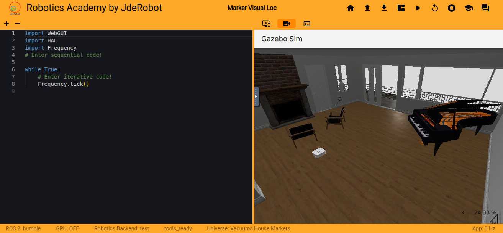
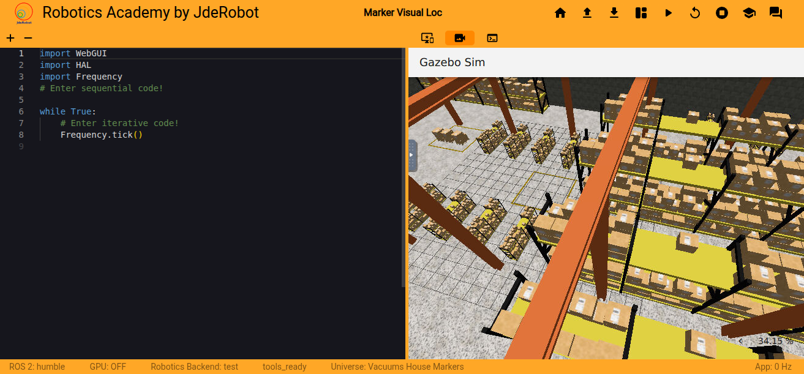

BLOG DE PRÁCTICAS EXTERNAS JDEROBOT ALBERTO LEÓN LUENGO
¡Bienvenido! En esta web se encuentra todo el contenido visto y aprendido en mis
Prácticas Externas realizadas con la empresa JdeRobot durante el curso 2025-2026
en el Grado en Ingeniería de Robótica Software.
A continuación, se muestran todas las entradas correspondientes a los blogs de prácticas
realizados durante el transcurso de las mismas, cuyo contenido se divide en las
20 semanas que ha durado mi periodo de Prácticas Externas.
SEMANA 01: 22-09-2025 al 26-09-2025
Instalación de Docker en Ubuntu 24.04
En primer lugar, se abre una terminal por defecto en el directorio
/home/user, a través de la cual se irán ejecutando los siguientes
comandos:
PASO 1: Acceso al escritorio
cd Escritorio/
PASO 2: Clonación del repositorio de RoboticsAcademy
Este script intenta configurar el entorno de desarrollo. Al ejecutar este script por
primera vez, aparecen varios errores, ya que faltan dependencias por instalar
(yarn y docker).
./scripts/develop_academy.sh
./scripts/develop_academy.sh: linea 146: yarn: orden no encontrada ./scripts/develop_academy.sh: linea 147: yarn: orden no encontrada ./scripts/develop_academy.sh: linea 166: docker: orden no encontrada Cleaning up... ./scripts/develop_academy.sh: linea 28: docker: orden no encontrada
PASO 5: Ejecución de comandos de configuración
Todos los comandos que se ejecutan a continuación se encargan de actualizar los
repositorios de APT, instalar las herramientas necesarias (certificados y curl),
crear el directorio para las claves de Docker, descargar la clave GPG de
Docker, dar permisos de lectura a dicha clave, añadir el repositorio de Docker a
APT y volver a actualizar la lista de paquetes.
PASO 9: Verificación de la versión de Docker instalada
docker --version
PASO 10: Creación del grupo de usuarios de Docker
sudo groupadd docker
PASO 11: Adición del usuario actual al grupo Docker
sudo usermod -aG docker $USER
PASO 12: Cambio de grupo
newgrp docker
PASO 13: Reejecución del script de preparación
sudo ./scripts/develop_academy.sh
IMPORTANTE: Al ejecutar el comando con sudo, todo se ejecuta
correctamente.
Configuración y uso del Docker en Visual Studio Code
PASO 1: Apertura de RoboticsAcademy en Visual Studio Code
cd Escritorio/RoboticsAcademy/
code .
PASO 2: Instalación de las extensiones de Docker
Tras instalar ambas extensiones, es necesario reiniciar el equipo para que
Docker y Visual Studio Code se integren correctamente.


PASO 3: Bucle de trabajo a seguir en Visual Studio Code
- Hacer los cambios necesarios dentro del directorio
RoboticsInfrastructure/.
- Hacer commit y push de dichos cambios en una nueva rama (Publish Branch).
- Acceder al directorio RoboticsAcademy/scripts/RADI/.
cd scripts/RADI/
- Ejecutar el script build.sh dentro de la nueva rama.
./build.sh -i <branch_name>
IMPORTANTE: Cada vez que se genera un nuevo RADI no se borra el
anterior, por lo que el espacio disponible en disco se irá llenando y llenando
cada vez que se genere un nuevo RADI hasta que no quede espacio disponible en disco.
Para evitar que esto ocurra, se debe ejecutar el siguiente comando en la terminal,
el cual se encargará de borrar todo el espacio de memoria que se ha ido llenando por
cada RADI generado:
docker system prune -af
- Volver al directorio principal.
cd ../..
- Cambiar la siguiente línea del fichero
compose_cfg/dev_humble_cpu.yaml.
# ANTES robotics-academy: image: jderobot/robotics-academy:latest
# DESPUÉS robotics-academy: image: jderobot/robotics-academy:test
- Ejecutar el script de preparación (sin sudo) para lanzar el Docker de
RoboticsAcademy con todos los cambios realizados.
./scripts/develop_academy.sh
- Acceder a la dirección web http://0.0.0.0:7164/ que aparece en la terminal al
ejecutar el comando anterior para poder entrar a Unibotics en local y verificar
que los cambios se han realizado correctamente.
IMPORTANTE: En el caso de que los cambios se hayan realizado
únicamente en el fichero database/universes.sql, sólo sería
necesario realizar el último de todos los pasos que componen este bucle de trabajo,
escrito a continuación.
./scripts/develop_academy.sh
Modificaciones necesarias para migrar de Gazebo 11 a Gazebo Harmonic
A continuación se enumeran todos y cada uno de los ficheros que se van a modificar
para poder llevar a cabo cada una de las tareas principales que se van a abordar
durante las Prácticas: La migración de escenarios, robots y otros elementos visuales
de Gazebo 11 a Gazebo Harmonic.
Todos estos ficheros se encuentran en el repositorio de GitHub
RoboticsInfrastructure,
que se encuentra a su vez dentro del repositorio de GitHub
RoboticsAcademy
(en ambos se trabajará desde la rama humble-devel).
# CAMBIAR EL NOMBRE DEL ROBOT model_folder = <robot_name>
# CAMBIAR EL NOMBRE DEL FICHERO .YAML bridge_params = os.path.join( get_package_share_directory("custom_robots"), "params", "robot_params.yaml" )
# AÑADIR / ELIMINAR LAS SIGUIENTES LÍNEAS SI EL ROBOT TIENE / NO TIENE CÁMARA start_gazebo_ros_image_bridge_cmd = Node( package="ros_gz_image", executable="image_bridge", arguments=["/<robot_name>/camera/image_raw"], output="screen", )
Se deja ejecutando el comando anterior en la terminal y se accede a la
página web de Unibotics.
PASO 3
Una vez dentro de Unibotics, se selecciona el ejercicio en el que se quiera
trabajar.
IMPORTANTE: Para que todo funcione correctamente, se debe
seleccionar la opción 'Local ROS2 (RoboticsBackend 4)', que aparece en la esquina
superior derecha al hacer clic en la foto de perfil.

PASO 4
Verificar que, tanto la simulación en Gazebo como la terminal, se han lanzado
correctamente.

Lanzamiento del RoboticsDatabase junto a RoboticsAcademy en local
PASO 1
Para poder lanzar RoboticsDatabase junto a RoboticsAcademy, se debe ejecutar el
siguiente comando en la terminal:
IMPORTANTE: Este comando se ejecuta ÚNICAMENTE la primera vez que
se lance el RoboticsDatabase junto a RoboticsAcademy.
PASO 2
Una vez ejecutado el comando anterior, ya no será necesario ejecutarlo
más veces, ya que lo que ha hecho este comando es crear un nuevo contenedor para
RoboticsDatabase, al cual se llamará con el flag --link cuando se vaya a lanzar
RoboticsAcademy. A continuación se muestran 3 formas diferentes de lanzar
RoboticsDatabase junto a RoboticsAcademy:
Lanzamiento de RoboticsDatabase + RoboticsAcademy (NVIDIA + GPU)
Por último, para comprobar que todos los Dockers que se van a utilizar se han
descargado y configurado correctamente, se debe ejecutar el siguiente comando
en la terminal:
sudo docker images
Cuyo resultado debe ser el siguiente:
REPOSITORY TAG IMAGE ID CREATED SIZE jderobot/robotics-backend latest 0e2a10ccfaf4 5 days ago 27.2GB jderobot/robotics-academy latest 1c67a50c79c2 13 days ago 28.5GB jderobot/robotics-database latest 3a1d0407347e 13 days ago 483MB
SEMANA 02: 29-09-2025 al 03-10-2025
Ejercicio de calentamiento: Cambiar el mundo a un ejercicio
Para ir familiarizándonos con el software de RoboticsInfrastructure, se me ha
pedido como primer ejercicio cambiar el mundo de Gazebo de uno de los ejercicios
que ya se haya migrado a Gazebo Harmonic.
En primer lugar, he accedido al fichero
RoboticsInfrastructure/database/universes.sql para localizar
aquellos mundos ya migrados a Gazebo Harmonic.
IMPORTANTE: La forma más sencilla de identificar los mundos migrados
a Gazebo Harmonic, es mirando si en su columna type aparece escrito
gazebo o gz. En caso de que aparezca escrito
gazebo, significa que ese mundo todavía se encuentra en Gazebo 11
y no se ha migrado. Pero si aparece escrito gz, significa que ese
mundo ya se ha migrado a Gazebo Harmonic.
A continuación se listan todos los mundos que tienen escrito gz
en su columna type, y que podrían utilizarse para llevar a cabo
este ejercicio:
En mi caso, he seleccionado los mundos correspondientes a los ejercicios de
Laser Mapping (número 12) y Marker Based Visual Loc
(número 25). El mundo del Laser Mapping es un almacén tipo Amazon,
mientras que el mundo del Marker Based Visual Loc es una casa de
dos plantas.
El resultado final de este ejercicio visualizará el almacén del ejercicio
Laser Mapping en la ventana de Gazebo del ejercicio
Marker Based Visual Loc.
A continuación se muestra cómo se ve inicialmente el ejercicio
Marker Based Visual Loc al lanzar el Docker de RoboticsAcademy
antes de realizar cualquier cambio en el código:

El único cambio que he realizado ha sido en el fichero
RoboticsInfrastructure/Launchers/marker_visual_loc.launch.py
en la siguiente línea:
# ANTES (MUNDO ORIGINAL) world_file_name = "marker_visual_loc.world"
# DESPUÉS (MUNDO NUEVO) world_file_name = "laser_mapping.world"
Una vez realizado este cambio, he hecho commit y push en una nueva rama que he creado
y publicado llamada test-aleon2020. Es importante hacer esto
siempre para evitar así cualquier tipo de conflicto con la rama principal.
Como los cambios se han realizado en un fichero que se encuentra dentro de
RoboticsInfrastructure, es obligatorio generar un nuevo RADI. Para ello, se deben
ejecutar los siguientes comandos en la terminal:
cd scripts/RADI/
./build.sh -i test-aleon2020
IMPORTANTE: Cada vez que se genera un nuevo RADI no se borra el
anterior, por lo que el espacio disponible en disco se irá llenando y llenando
cada vez que se genere un nuevo RADI hasta que no quede espacio disponible en disco.
Para evitar que esto ocurra, se debe ejecutar el siguiente comando en la terminal,
el cual se encargará de borrar todo el espacio de memoria que se ha ido llenando por
cada RADI generado:
docker system prune -af
IMPORTANTE: Si es la primera vez que se ejecuta este script, el
tiempo que tardará en ejecutarse por completo será considerablemente largo, ya que
debe configurar todo el entorno. Si es la primera vez que se ejecuta tardará unos
35-45 minutos, de lo contrario, tardará unos 2-3 minutos.
Una vez finalizada la ejecución del script build.sh, se debe
regresar al repositorio principal:
cd ../..
Pero antes de ejecutar el script develop_academy.sh, hay que
modificar la siguiente línea del fichero
RoboticsAcademy/compose_cfg/dev_humble_cpu.yaml:
# ANTES robotics-academy: image: jderobot/robotics-academy:latest
# DESPUÉS robotics-academy: image: jderobot/robotics-academy:test
Con este cambio ya realizado, ya se puede lanzar el script
develop_academy.sh:
./scripts/develop_academy.sh
Y por último, sólo quedaría acceder a la dirección web `http://0.0.0.0:7164/` que
aparece en la terminal al ejecutar el comando anterior para poder entrar a Unibotics
en local y verificar que los cambios se han realizado correctamente.
A continuación se muestra cómo se ve el ejercicio
Marker Based Visual Loc al lanzar el Docker de RoboticsAcademy
con todos estos cambios realizados en el código:

Migración del ejercicio Obstacle Avoidance a Gazebo Harmonic
Una vez realizado este primer ejercicio de calentamiento para irme familiarizando
con el código de RoboticsInfrastructure, se me ha pedido realizar la migración
completa de Gazebo 11 a Gazebo Harmonic del ejercicio
Obstacle Avoidance, que introduce de forma práctica la navegación
local mediante el uso de campos de fuerza virtuales (VFF, Virtual Force Fields).
A continuación, se encuentran todos los ficheros que se han modificado y/o creado
(y de qué forma) para poder llevar a cabo la migración completa de este ejercicio
de Gazebo 11 a Gazebo Harmonic:
En este fichero se han modificado las partes correspondientes a las etiquetas
<plugin> y <sensor>, donde el plugin pasa de estar declarado dentro
del sensor a integrarse en él. Además, es importante añadir al final de la nueva
versión los plugins correspondientes al diff-drive-system y al
odometry-publisher-system:
# ESTE PLUGIN SE INTEGRA DENTRO DE <SENSOR> AL PASAR A GAZEBO HARMONIC <plugin name="object_controller" filename="libgazebo_ros_planar_move.so"> <commandTopic>F1ROS/cmd_vel</commandTopic> <odometryTopic>F1ROS/odom</odometryTopic> <odometryFrame>odom</odometryFrame> <odometryRate>20.0</odometryRate> <robotBaseFrame>xf1</robotBaseFrame> </plugin>
# AÑADIR ESTE PLUGIN AL FINAL DEL FICHERO <plugin filename="gz-sim-diff-drive-system" name="gz::sim::systems::DiffDrive"> <!-- wheels --> <left_joint>wheel_left_joint</left_joint> <right_joint>wheel_right_joint</right_joint> <!-- kinematics --> <wheel_separation>0.287</wheel_separation> <wheel_radius>0.033</wheel_radius> <!-- limits --> <max_linear_acceleration>1.0</max_linear_acceleration> <topic>F1ROS/cmd_vel</topic> <frame_id>odom</frame_id> <!-- <tf_topic>/tf</tf_topic> --> <odom_publisher_frequency>20.0</odom_publisher_frequency> <child_frame_id>xf1</child_frame_id> </plugin>
# AÑADIR ESTE PLUGIN AL FINAL DEL FICHERO <plugin filename="gz-sim-odometry-publisher-system" name="gz::sim::systems::OdometryPublisher"> <odom_frame>odom</odom_frame> <robot_base_frame>xf1</robot_base_frame> <odom_publish_frequency>20.0</odom_publish_frequency> <odom_topic>F1ROS/odom</odom_topic> <dimensions>3</dimensions> </plugin>
Este fichero se crea de cero en la ruta especificada, aunque se puede coger
cualquier fichero del tipo robot_params.yaml como referencia.
En este caso, sólo se añaden los topics correspondientes al publicador y al
subscriptor del plugin del diff-drive-system y aquellos relativos al publicador
del plugin del láser:
# gz topic published by DiffDrive plugin - ros_topic_name: "F1ROS/odom" gz_topic_name: "F1ROS/odom" ros_type_name: "nav_msgs/msg/Odometry" gz_type_name: "gz.msgs.Odometry" direction: GZ_TO_ROS
# gz topic subscribed to by DiffDrive plugin - ros_topic_name: "F1ROS/cmd_vel" gz_topic_name: "F1ROS/cmd_vel" ros_type_name: "geometry_msgs/msg/Twist" gz_type_name: "gz.msgs.Twist" direction: ROS_TO_GZ
# gz topic published by Sensors plugin (LIDAR) - ros_topic_name: "F1ROS/laser/scan" gz_topic_name: "F1ROS/laser/scan" ros_type_name: "sensor_msgs/msg/LaserScan" gz_type_name: "gz.msgs.LaserScan" direction: GZ_TO_ROS
En este caso, la única modificación realizada en este fichero es la
adición de la línea f1/params para que el fichero que se acaba de
crear (f1_result_laser_no_cam.yaml) se tenga en cuenta a la hora de
lanzar el Docker:
Una vez creado el directorio obstacle_avoidance/, y a su vez dentro
de él el fichero spawn_robot.launch.py, lo único que habría que
hacer es coger cualquier fichero con el mismo nombre de otro ejercicio que ya esté
migrado a Gazebo Harmonic, copiar su contenido y sólamente habría que comentar todo
lo relativo a las variables start_gazebo_ros_image_bridge_cmd y
start_gazebo_ros_depth_bridge_cmd, y lo más importante, modificar
el nombre del fichero que se le pasa como argumento a bridge_params (en este caso,
f1_renault_laser_no_cam.yaml):
El contenido de este fichero es idéntico al del resto de ficheros con el mismo
formato de nombre (<universe_name>.config), por lo que lo único que habría que
hacer es crear este nuevo fichero y rellenar su contenido con un simple Ctrl+C Ctrl+V
de otro fichero que se encuentre en el mismo directorio con el mismo formato de
nombre.
Para este fichero, lo único que habría que hacer es un Ctrl+C Ctrl+V de
cualquier fichero con el mismo formato de nombre que ya haya sido migrado a Gazebo
Harmonic y modificar únicamente las líneas correspondientes a las
variables robot_launch_dir y world_file_name,
correspondientes a las rutas en las que se encuentran el directorio que almacena el
fichero spawn_robot.launch.py y el fichero del mundo que utiliza
este ejercicio.
IMPORTANTE: En caso de que no se haya creado dentro del directorio
obstacle_avoidance/ el fichero
robot_state_publisher.launch.py, es obligatorio comentar
y/o eliminar del código todo lo relacionado con la variable
robot_state_publisher_cmd.
En este fichero, lo único que habría que realizar es un Ctrl+C Ctrl+V de
cualquier fichero con el mismo formato de nombre que ya haya sido migrado a Gazebo
Harmonic y sustituir todas aquellos flags <include> de la versión antigua por
aquellos que aparezcan en la versión nueva.
Este es uno de los cambios más sencillos de realizar en todo el proceso de migración.
Lo único que habría que hacer es identificar el ejercicio que se quiere migrar de
Gazebo 11 a Gazebo Harmonic (en este caso, Obstacle Avoidance) y tener en cuenta lo
siguiente: Cambiar el valor de la columna type de
gazebo a gz, y el campo de la tercera columna,
en el que inicialmente aparece None, sustituirlo por la ruta al fichero
simple_circuit_obstacles_followingcam.config creado anteriormente:
[LA MIGRACIÓN DEL EJERCICIO OBSTACLE AVOIDANCE A GAZEBO HARMONIC CONTINÚA
EN LA SEMANA 03 ...]
SEMANA 03: 06-10-2025 al 10-10-2025
[LA MIGRACIÓN DEL EJERCICIO OBSTACLE AVOIDANCE A GAZEBO HARMONIC CONTINÚA
EN LA SEMANA 03 ...]
Una vez realizados todos estos cambios en todos los ficheros mencionados,
he hecho commit y push en una nueva rama que he creado y publicado llamada
obstacle-avoidance-harmonic. Es importante hacer esto siempre para
así evitar cualquier tipo de conflicto con la rama principal.
Como todos los cambios se han realizado en ficheros que se encuentran dentro de
RoboticsInfrastructure, es obligatorio generar un nuevo RADI. Para ello, se deben
ejecutar los siguientes comandos en la terminal:
cd scripts/RADI/
./build.sh -i obstacle-avoidance-harmonic
IMPORTANTE: Cada vez que se genera un nuevo RADI no se borra el
anterior, por lo que el espacio disponible en disco se irá llenando y llenando
cada vez que se genere un nuevo RADI hasta que no quede espacio disponible en disco.
Para evitar que esto ocurra, se debe ejecutar el siguiente comando en la terminal,
el cual se encargará de borrar todo el espacio de memoria que se ha ido llenando por
cada RADI generado:
docker system prune -af
Una vez finalizada la ejecución del script build.sh, se debe
regresar al repositorio principal:
cd ../..
Pero antes de ejecutar el script develop_academy.sh, hay que
modificar la siguiente línea del fichero
RoboticsAcademy/compose_cfg/dev_humble_cpu.yaml:
# ANTES robotics-academy: image: jderobot/robotics-academy:latest
# DESPUÉS robotics-academy: image: jderobot/robotics-academy:test
Con este cambio ya realizado, ya se puede lanzar el script
develop_academy.sh:
./scripts/develop_academy.sh
Y por último, sólo quedaría acceder a la dirección web `http://0.0.0.0:7164/` que
aparece en la terminal al ejecutar el comando anterior para poder entrar a Unibotics
en local y verificar que los cambios se han realizado correctamente.
A continuación se muestra cómo se ve el ejercicio Obstacle Avoidance
al lanzar el Docker de RoboticsAcademy con todos estos cambios realizados:
IMAGEN UNIBOTICS GAZEBO OBSTACLE AVOIDANCE
Además, para verificar que tanto el escenario como el coche han sido migrados
correctamente, se muestra una pequeña animación del coche moviéndose en línea
recta para verificar que todo el proceso se ha realizado correctamente:
VÍDEO / GIF COCHE MOVIÉNDOSE POR EL ESCENARIO
Migración del ejercicio Global Navigation a Gazebo Harmonic
Con el ejercicio de Obstacle Avoidance ya migrado por completo a Gazebo Harmonic,
se me ha pedido realizar la migración completa de Gazebo 11 a Gazebo Harmonic de un
segundo ejercicio, en este caso, Global Navigation, que introduce
de forma práctica la navegación global mediante el uso y la implementación de la
lógica del algoritmo de planificación de ruta del gradiente (GPP, Gradient Path
Planning).
A continuación, se encuentran todos los ficheros que se han modificado y/o creado
(y de qué forma) para poder llevar a cabo la migración completa de este ejercicio
de Gazebo 11 a Gazebo Harmonic:
En este caso, no ha sido llevar a cabo ninguna modificación en este fichero, ya que el
taxi utilizado para esta versión ya se encuentra migrado a Gazebo Harmonic:
Este fichero se crea de cero en la ruta especificada, aunque se puede coger
cualquier fichero del tipo robot_params.yaml como referencia.
En este caso, se añaden los topics correspondientes al plugin subscriptor del
DiffDrive, y los plugin publicadores del DiifDrive, del sensor láser LIDAR y de
la cámara.
# gz topic published by DiffDrive plugin - ros_topic_name: "/taxi_holo/odom" gz_topic_name: "/taxi_holo/odom" ros_type_name: "nav_msgs/msg/Odometry" gz_type_name: "gz.msgs.Odometry" direction: GZ_TO_ROS
# gz topic subscribed to by DiffDrive plugin - ros_topic_name: "/taxi_holo/cmd_vel" gz_topic_name: "/taxi_holo/cmd_vel" ros_type_name: "geometry_msgs/msg/Twist" gz_type_name: "gz.msgs.Twist" direction: ROS_TO_GZ
# gz topic published by Sensors plugin (LIDAR) - ros_topic_name: "/taxi_holo/laser/scan" gz_topic_name: "/taxi_holo/laser/scan" ros_type_name: "sensor_msgs/msg/LaserScan" gz_type_name: "gz.msgs.LaserScan" direction: GZ_TO_ROS
# gz topic published by Sensors plugin (Camera) - ros_topic_name: "/taxi_holo/camera/camera_info" gz_topic_name: "/taxi_holo/camera/camera_info" ros_type_name: "sensor_msgs/msg/CameraInfo" gz_type_name: "gz.msgs.CameraInfo" direction: GZ_TO_ROS
En este caso, la única modificación realizada en este fichero es la
adición de las líneas taxi_navigator/launch,
taxi_navigator/params y taxi_navigator/worlds,
para que el fichero que se acaba de crear (taxi_holo_ROS.yaml),
se tenga en cuenta a la hora de lanzar el Docker:
Una vez creado el directorio global_navigation/, y a su vez dentro
de él el fichero spawn_robot.launch.py, lo único que habría que
hacer es coger cualquier fichero con el mismo nombre de otro ejercicio que ya esté
migrado a Gazebo Harmonic, copiar su contenido y sólamente habría que comentar todo
lo relativo a las variables start_gazebo_ros_image_bridge_cmd y
start_gazebo_ros_depth_bridge_cmd, y lo más importante, modificar
el nombre del fichero que se le pasa como argumento a bridge_params (en este caso,
<robot_model_name>.yaml):
El contenido de este fichero es idéntico al del resto de ficheros con el mismo
formato de nombre (<universe_name>.config), por lo que lo único que habría que
hacer es crear este nuevo fichero y rellenar su contenido con un simple Ctrl+C Ctrl+V
de otro fichero que se encuentre en el mismo directorio con el mismo formato de
nombre.
Para este fichero, lo único que habría que hacer es un Ctrl+C Ctrl+V de
cualquier fichero con el mismo formato de nombre que ya haya sido migrado a Gazebo
Harmonic y modificar únicamente las líneas correspondientes a las
variables robot_launch_dir y world_file_name,
correspondientes a las rutas en las que se encuentran el directorio que almacena el
fichero spawn_robot.launch.py y el fichero del mundo que utiliza
este ejercicio.
IMPORTANTE: En caso de que no se haya creado dentro del directorio
global_navigation/ el fichero
robot_state_publisher.launch.py, es obligatorio comentar
y/o eliminar del código todo lo relacionado con la variable
robot_state_publisher_cmd.
En este fichero, lo único que habría que realizar es un Ctrl+C Ctrl+V de
cualquier fichero con el mismo formato de nombre que ya haya sido migrado a Gazebo
Harmonic y sustituir todas aquellos flags <include> de la versión antigua por
aquellos que aparezcan en la versión nueva.
Este es uno de los cambios más sencillos de realizar en todo el proceso de migración.
Lo único que habría que hacer es identificar el ejercicio que se quiere migrar de
Gazebo 11 a Gazebo Harmonic (en este caso, Global Navigation) y tener en cuenta lo
siguiente: Cambiar el valor de la columna type de
gazebo a gz, y el campo de la tercera columna,
en el que inicialmente aparece None, sustituirlo por la ruta al fichero
<universe_name>.config creado anteriormente:
# GAZEBO 11 8 City Large /opt/jderobot/Launchers/taxi_navigator.launch.py None ROS2 gazebo {0.0,0.0,0.0,0.0,0.0,0.0}
# GAZEBO HARMONIC 8 City Large /opt/jderobot/Launchers/taxi_navigator.launch.py {"gzsim":"/opt/jderobot/Launchers/visualization/taxi_navigator.config"} ROS2 gz {0.0,0.0,0.0,0.0,0.0,0.0}
Una vez realizados todos estos cambios en todos los ficheros mencionados,
he hecho commit y push en una nueva rama que he creado y publicado llamada
global-navigation-migration. Es importante hacer esto siempre para
así evitar cualquier tipo de conflicto con la rama principal.
Como todos los cambios se han realizado en ficheros que se encuentran dentro de
RoboticsInfrastructure, es obligatorio generar un nuevo RADI. Para ello, se deben
ejecutar los siguientes comandos en la terminal:
cd scripts/RADI/
./build.sh -i global-navigation-migration
IMPORTANTE: Cada vez que se genera un nuevo RADI no se borra el
anterior, por lo que el espacio disponible en disco se irá llenando y llenando
cada vez que se genere un nuevo RADI hasta que no quede espacio disponible en disco.
Para evitar que esto ocurra, se debe ejecutar el siguiente comando en la terminal,
el cual se encargará de borrar todo el espacio de memoria que se ha ido llenando por
cada RADI generado:
docker system prune -af
Una vez finalizada la ejecución del script build.sh, se debe
regresar al repositorio principal:
cd ../..
Pero antes de ejecutar el script develop_academy.sh, hay que
modificar la siguiente línea del fichero
RoboticsAcademy/compose_cfg/dev_humble_cpu.yaml:
# ANTES robotics-academy: image: jderobot/robotics-academy:latest
# DESPUÉS robotics-academy: image: jderobot/robotics-academy:test
Con este cambio ya realizado, ya se puede lanzar el script
develop_academy.sh:
./scripts/develop_academy.sh
Y por último, sólo quedaría acceder a la dirección web `http://0.0.0.0:7164/` que
aparece en la terminal al ejecutar el comando anterior para poder entrar a Unibotics
en local y verificar que los cambios se han realizado correctamente.
A continuación se muestra cómo se ve el ejercicio Global Navigation
al lanzar el Docker de RoboticsAcademy con todos estos cambios realizados:
IMAGEN UNIBOTICS GAZEBO GLOBAL NAVIGATION
Además, para verificar que tanto el escenario como el coche han sido migrados
correctamente, se muestra una pequeña animación del coche moviéndose en línea
recta para verificar que todo el proceso se ha realizado correctamente: